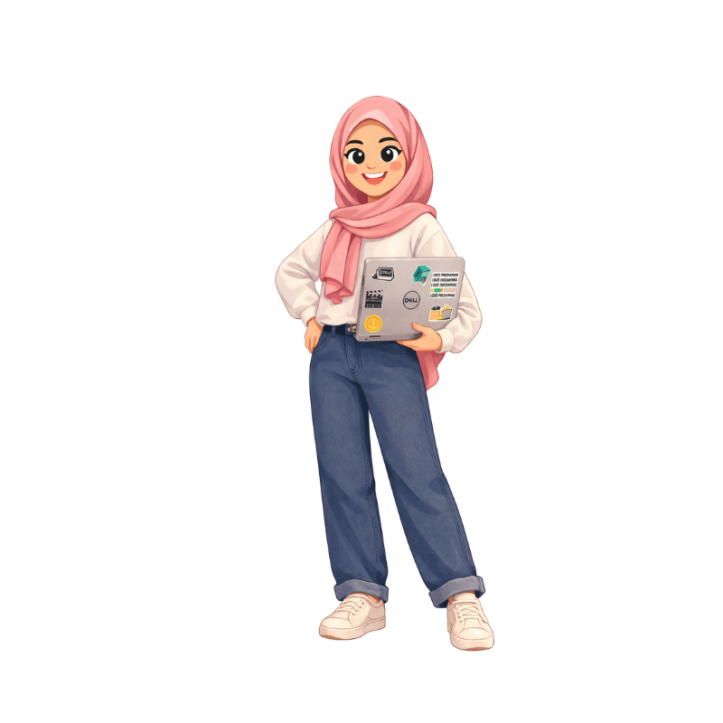

This is me.
I am Tuqa AL-Dowikat, a Business Information Technology graduate from the University of Jordan who enjoys mixing logic with creativity. I like building things that feel useful, clear, and visually strong.
Today I work part-time in social media marketing and academic coordination, creating content, designs, and videos, and helping training programs run smoothly. Alongside that, I keep growing my technical skills through UI/UX and mobile app projects.
As a person, I am curious, expressive, and always trying to improve. I care about details, clean work, and making ideas look alive instead of plain and forgettable.

Creative
I enjoy visual storytelling, editing, and building pages that feel memorable.
Practical
I prefer ideas that make life easier, clearer, and more useful in real situations.
Curious
I like learning tools, trying new styles, and improving work until it feels right.